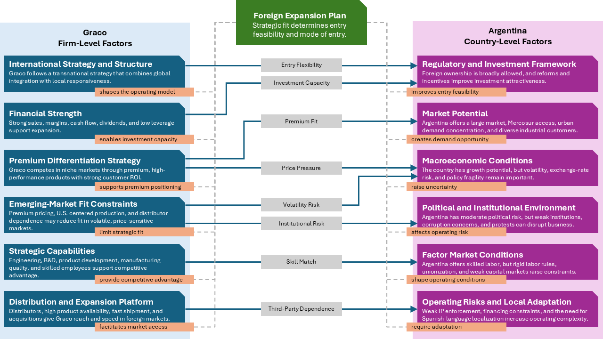
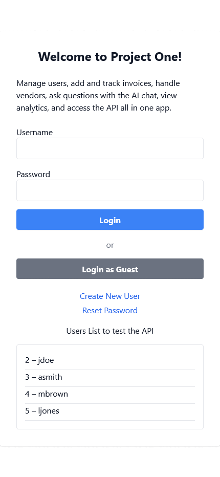
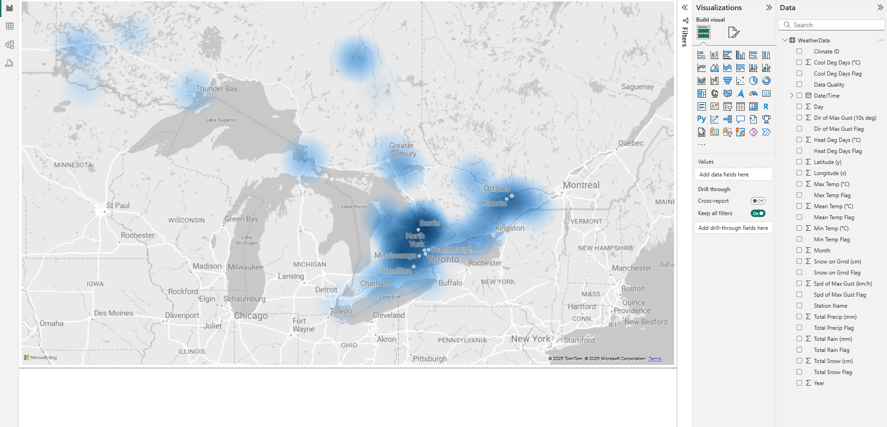
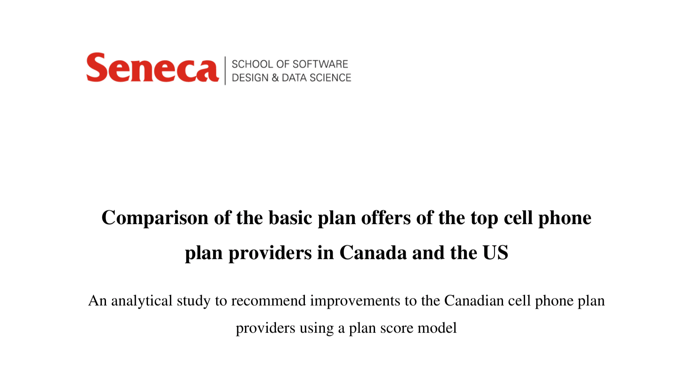

About Me
Dynamic professional with 7+ years of experience in business and data analytics. Well-versed in performance monitoring, ETL workflows, predictive analytics, and data visualization using Power BI and Tableau. Skilled in delivering actionable insights, optimizing processes, and collaborating across cross-functional teams to drive business performance and realize process improvements
What Makes Me Stand Out
My journey started at Careem during its early start-up phase, where I was one of the first members of the operations team handling driver support. This quickly evolved into working with the business management software, digging into problems at their core, and finding practical solutions. Along the way, I gained exposure to multiple business areas including sales, marketing, finance, and business intelligence. I was drawn to analytics, where I began writing my own queries and creating KPIs, becoming the go-to person for new projects and a pivotal contributor to the company’s rapid growth and eventual acquisition by Uber for USD 3.1 billion. Drawn to analytics and eager to strengthen my skills, I pursued further education in Canada, earning a Postgraduate Certificate in Business Analytics at Seneca Polytechnic to complement my Bachelor’s degree in Business Administration.
After completing my studies, I joined EllisDon Corporation in my first professional role in Canada, where I built expertise in requirements gathering, UAT testing and implementation, workflow optimization, and delivering actionable insights. Working across teams, I supported initiatives that improved operational efficiency and reinforced my passion for data-driven problem-solving. In this role, I consistently sought opportunities to enhance workflows beyond the initial request, researching and implementing future-focused solutions that created lasting impact and established strong foundations within an emerging division.
I am motivated by solving real-world problems, helping people make informed decisions, and enabling opportunities through thoughtful and effective use of data. I find purpose in creating measurable, positive outcomes for both individuals and organizations, and I take pride in building solutions that continue to deliver value long after implementation.
Education
Carleton University • Ottawa, Ontario
Seneca Polytechnic College • Markham, Ontario
Al-Balqa Applied University • Salt, Jordan
Projects and work samples
International Business: Foreign Expansion Plan

This report analyzes Graco Inc.’s potential expansion into Argentina through an international business and strategic management perspective. The analysis evaluates Argentina’s institutional environment, macroeconomic risks, labor market conditions, investment framework, and trade networks, while examining how Graco’s transnational strategy, premium differentiation, engineering capabilities, and distribution model align with the market.
Live Flask App: Project One

This is a Flask-based web application I developed and deployed using Render. It demonstrates my ability to build and host a Python web app with dynamic functionality and API endpoints. View the source code on GitHub.
Create a dummy user or login as guest and test the API!
The app allows you to manage users, add and track invoices, handle vendors, ask questions with the AI chat, view analytics, and access the API all in one integrated platform.
Power BI Weather Data Pipeline

This project demonstrates a dynamic Power BI pipeline that retrieves and processes historical weather data from Environment Canada. It uses Power Query (M) to extract file metadata, filter by year, and combine multiple CSV files into a structured dataset.
Governance and Accountability Report
This report analyzes governance and accountability issues at EllisDon with a focus on health and safety management in high-risk construction operations. It evaluates gaps between the company’s stated ESG and safety commitments and their execution on multi-employer job sites, particularly in relation to subcontractor oversight, critical risk controls, and escalation practices. The analysis draws on recent regulatory actions, industry benchmarks, and applicable occupational health and safety legislation to assess operational, legal, and reputational risks. It further examines how EllisDon’s current governance framework aligns with industry expectations and proposes strategic recommendations to strengthen safety governance, improve contractor accountability, and enhance board-level visibility over high-risk activities.
Business Analytics Consulting Capstone Project

This project was completed as part of my final semester at Seneca College. It analyzed Canadian cell phone plans compared to U.S. offerings, with the goal of providing a data-driven assessment of how Canadian plans perform in terms of value, features, and cost. Our team developed a scoring model that incorporated both qualitative and quantitative data.
My contribution:
- Identified key columns from the dataset (Table 3) and cleaned and normalized the data
- Defined the core features to assess (e.g. data, coverage, extras)
- Designed the scoring model and normalization method
- Assigned importance weights based on appendix data
- Developed metrics like points per dollar for comparison
- Created visualizations and comparative graphs
- Drew final insights and supported the report narrative
Key achievements and projects
Power BI Reporting Initiative: Led a Power BI initiative to build dashboards and create specific and complex reports that serve multiple sites based on their individual requirements, by gathering inputs from project agreements or directly communicating with site GMs. This enabled fast-paced, agile delivery of ad hoc reports.
Energy Reporting and ETL Optimization: Optimized ETL pipelines for energy reports to enable faster, autonomous data collection and integrated government weather data into reporting databases for richer context and analysis.
Contractors Insurance Compliance: Assessed the platform used for contractors’ insurance compliance by matching raw data with D365 and site visit records, uncovering inaccuracies that increased company risk. My insights led to the decision to transition operations in-house, lowering risk, improving validation accuracy, streamlining processes, and removing compliance fees for contractors, which in turn reduced company costs.
Survey Automation and Vendor Management: Managed the survey process and identified a new vendor after assessing multiple options to improve performance. Fully automated the process from filtering data and assigning services to distributing surveys and building a Power BI report that sends email notifications with the data ready to be shared when surveys are due.
Quality Assurance Tool: Contributed to building a Flask-based solution that supported quality audits during construction and maintenance, tracked compliance against Project Agreement requirements, and provided visual insights that improved audit efficiency and oversight.
Compliance Project: Led the initial phase of the driver permit application process after Careem received its operating license. Designed workflows, managed driver data, and built databases linked to performance and quality teams to prioritize permits for high-performing drivers.
Scooter Delivery Launch: Analyzed scooter driver performance in Jordan, showing better delivery times and trips per hour compared to regular drivers. Worked with third parties to plan demand and helped introduce installment plans, making it easier for new drivers to join and supporting the scooter delivery launch.
Geo-fenced Locations: Analyzed hundreds of thousands of GPS data points to identify high-density locations and created geo-fenced pick-up points on the app, enhancing customer experience by guiding riders to optimal pick-up spots.
Performance Project: Developed a weekly plan addressing peak-hour demand by forming a task force of high-performing drivers and motivating them with targeted in-app messages and incentives.
⭐ indicates years of hands-on experience